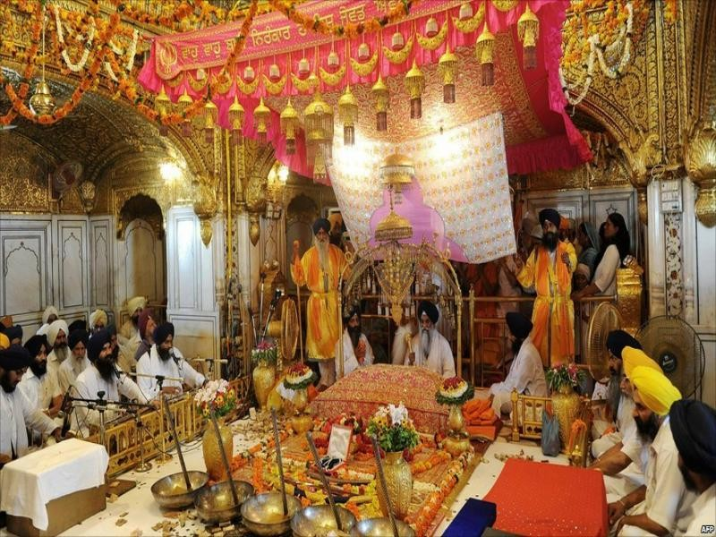

EXTERIOR
- MYTHS
- Floating Structure: There's a myth that the Golden Temple is a floating structure because it appears to float on the Amrit Sarovar (Pool of Nectar) surrounding it. However, the temple is built on a concrete platform in the center of the sarovar, giving it the illusion of floating.
- Underground Treasure: Some myths suggest that there are hidden treasures buried beneath the Golden Temple, including gold and precious jewels. However, there's no evidence to support these claims, and the temple's wealth primarily comes from donations made by devotees.
- Healing Powers: It's often believed that the waters from the Amrit Sarovar have healing properties and can cure various ailments. While the sarovar is considered sacred by Sikhs, any perceived healing effects are likely attributed to faith rather than supernatural powers.
- Guardian Spirits: Like many religious sites, there are myths about the Golden Temple being guarded by divine spirits or celestial beings. However, there's no substantial evidence to support these claims, and the temple complex is primarily a place of worship and reflection.
- Predictions of Future Events: Some myths suggest that the architecture and design of the Golden Temple contain hidden messages or predictions about future events. However, these claims are unsubstantiated and not supported by any credible evidence.
INTERIOR


- FACTS
- Spiritual Heart of Sikhism: The Golden Temple, also known as Harmandir Sahib, serves as the spiritual and cultural epicenter of Sikhism. It embodies the core principles of Sikhism, including equality, service, and devotion to the one formless God.
- Architectural Splendor: The Golden Temple is renowned for its breathtaking architecture, featuring a gleaming golden exterior adorned with intricate designs and ornate domes. Its reflective pool, known as the Amrit Sarovar (Pool of Nectar), adds to its ethereal beauty, creating a captivating sight for visitors.
- Historical Significance: Constructed in the 16th century by Guru Arjan Dev Ji, the fifth Sikh Guru, the Golden Temple holds immense historical significance. It has witnessed pivotal moments in Sikh history, including acts of bravery, sacrifice, and resilience in the face of adversity.
- Community Kitchen (Langar): One of the most remarkable aspects of the Golden Temple is its langar, or community kitchen, which serves free meals to all visitors regardless of caste, creed, or religion. It is one of the largest free kitchens in the world, symbolizing the Sikh principles of equality and selfless service.
- Universal Message of Peace and Harmony: The Golden Temple stands as a beacon of peace, welcoming people from all walks of life to come together in prayer, reflection, and unity. It promotes interfaith dialogue, tolerance, and understanding, fostering a spirit of harmony and cooperation among diverse communities.